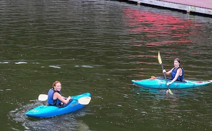
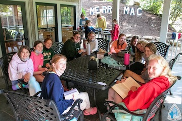

Activities
These are my favorite activities to do each summer and why I like them:
- cooking - food we make is delicous and we get to take home cookbooks
- kayaking - it's a fun time with friends in the lake and the trips are really fun
- dance - we get to do performances at fine arts night and it is really fun
- archery - it is an activity I would never get to do at home, so it is a great opportunity
- swimming- it's so fun to spend time with friends in the lake and play around


Home